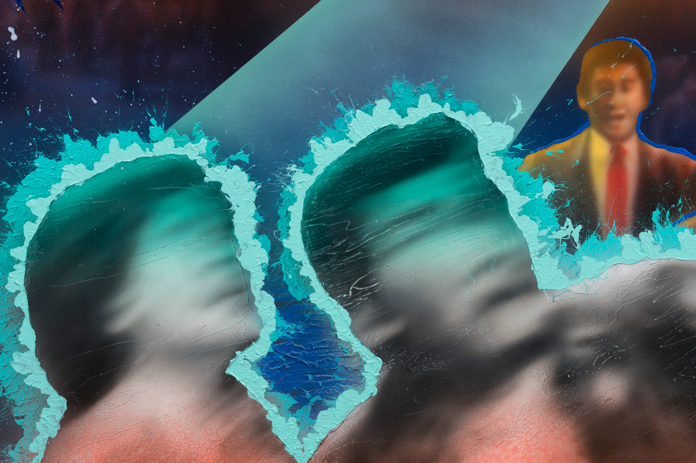
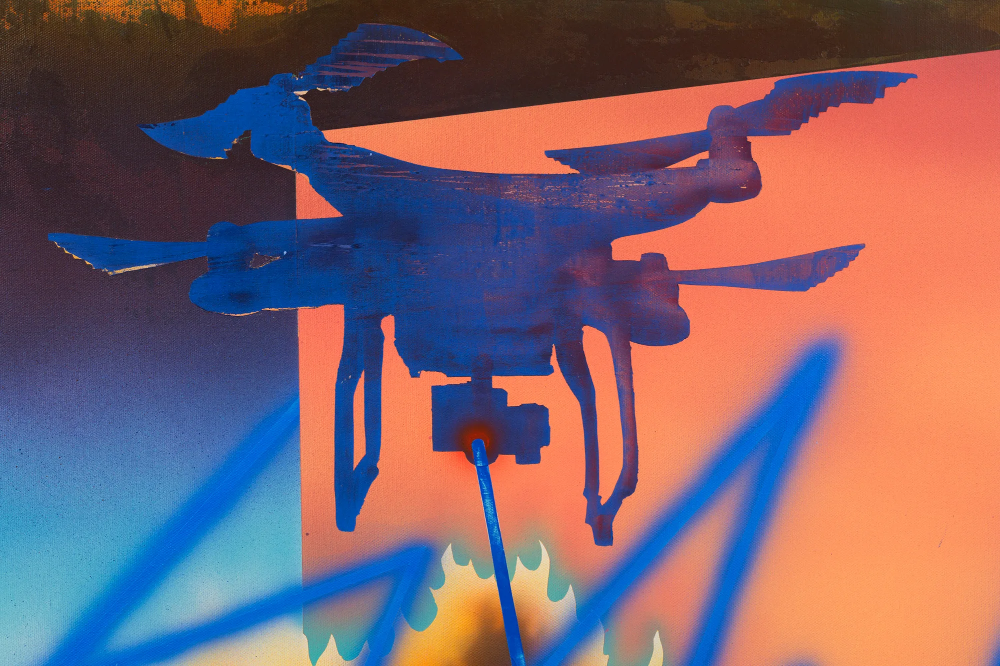
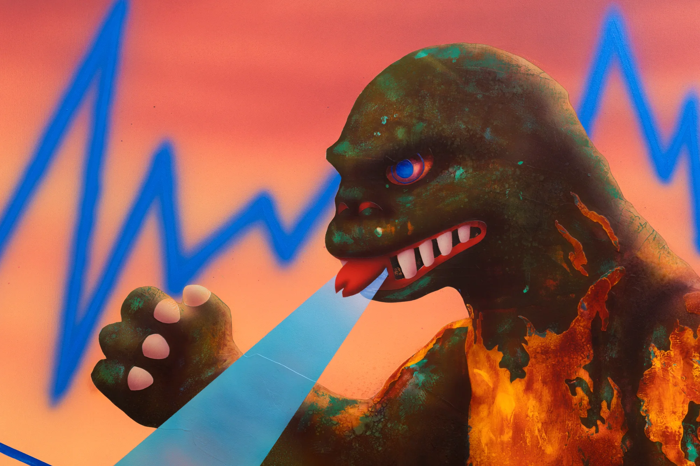

擊落他們！
Bring Them Down!
2024

「無邪的亞洲小孩，手中的怪獸玩具噴發出半透明光束，綠焰籠罩城市中的戀人，神秘西裝男看似逃過一劫，而怪獸被場外的無人機花式擊中。」
在影視媒體日漸滿溢的年歲，影像成為了交織故事與意識型態的載體，也是Z世代理解世界的快速渠道。我看著怪獸電影長大，卻在成年後才理解特攝電影背後對於二戰歷史及核武的指涉。哥吉拉是毀滅的象徵，也是一個世代對於恐懼的具象化，吞噬人類又受人注目，它在影視產業的推動下成為了娛樂文化的符號，被大量商品化。然而怪獸電影若去除怪獸這個複雜的意識形態融合，儼然就是上個世紀投射的災難戰爭片。
這件作品參照特攝片廠的拍攝概念，將真實的天空與場景的天空切分開來，以色調與圖像邊界的處理手法差異，製造充滿影像感的不同層次。疊加了由美國出產的玩具廣告畫面，以及日本怪獸電影中逃難的人民、火燒城市的影像，加入空中無人機的射擊軌跡，製造戰亂般的連鎖混雜畫面。在真實世界裡，怪獸僅是被媒體操縱的意象，在文明被摧毀的電影情節中與光榮共舞。實際上真正的怪獸是核武，是飛彈、是政治情勢，是無人機的進犯，也是未來體無完膚、沒有自由的人們。
混亂的國度裡，生於和平時代的孩子手握著怪獸，卻並不理解現實的無情。
作品與細節
VIEWS & DETAILS

